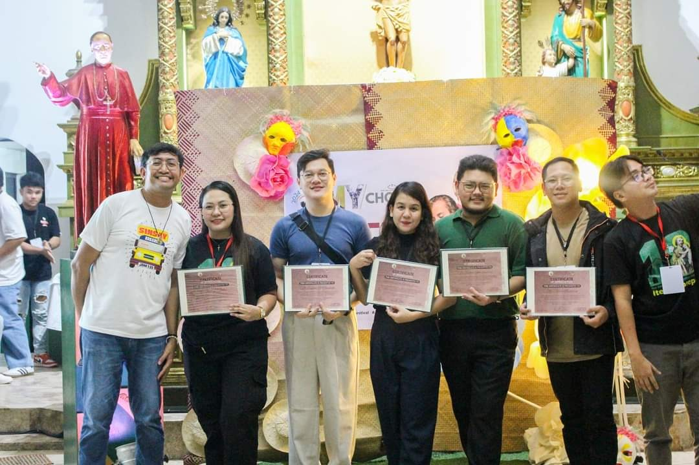

Contribution
What kind of work becomes visible to others, and what meaningful effort remains largely unseen?
Resistance · Community in practice
A space for examining what recognition means when it follows sustained contribution, responsibility, trust, and service to others rather than becoming the reason for the work itself.
Resistance
Recognition can be visible, but the work that produces it often is not. Service is usually built from repeated acts of responsibility, coordination, care, and follow-through long before anyone names them as accomplishments.
That makes recognition useful to examine. It can show what a group values, which forms of contribution become visible, whose effort is acknowledged, and how trust is built over time.
Through Community, this becomes Resistance because recognition sits inside collective systems. It is shaped by norms, expectations, access, relationships, and the uneven ways institutions decide what counts.
What kind of work becomes visible to others, and what meaningful effort remains largely unseen?
What does someone keep carrying when there is no guarantee of praise, reward, or attention?
How does consistent service change what people are willing to entrust to a person over time?
What does an award, commendation, or acknowledgment reveal about the values of the community giving it?
From service to recognition
A recognition can mark a moment, but it rarely captures the full sequence of choices that came before it. The more interesting story is usually the pattern: showing up, taking responsibility, making room for others, solving practical problems, and staying involved when the work becomes less visible.
Seen this way, recognition is less a destination than a trace. It points back toward the relationships, expectations, and forms of service that a community has learned to value.
Selected cases
Arranged from newest to oldest, these cases look at what recognition can reveal about sustained contribution, leadership, character, and the values communities choose to affirm.

In September 2025, nearly five years after concluding my term as President of Joseph Marello Youth, I was invited back to the JMY Faith Festival as a speaker and was recognized for contributions to the development of the youth group.
Read case →
A case about challenging standards, being doubted, trusting your ability to lead, and what recognition can reveal about the values a community chooses to affirm.
Read case →Community → Resistance
Return to Work to see how Character, Creativity, and Community become Reflections, Renaissance, and Resistance through engagement.
Explore Resistance →